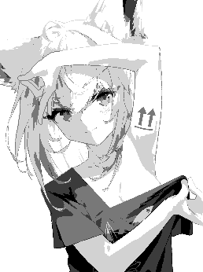
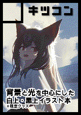

『お知らせ(Notice)』
れからこのサイトは、他の荒しからアートを守りたい方への情報提供の目的のみて運営されます。
From now on, this page will be active only to provide information to thoes who want to protect arts from other griefers.
直したい画像をDLしてBlueMarbleに読み込ませるか、Photoshopなどのピクセル確認出来るソフトに入れてください。
Download the image you want to fix, Upload on BlueMarble or open it from a software like Photoshop that can check each pixels.
1. 島根県 益田市 白上町 [Shimane-ken Masuda-si Shirakami-cho]
場所リンク(Link to the place)
1.

最初に出来た白上。色々トラブルがあったけど皆さんのご協力で完成しました！
Firstly made Shirakami. Lots of trouble during the process, but due to all your help, we could have it complete!
2.
左下に作られたすいちゃんの完成絵も載せました。現在持続的に一部が削除される被害を受けており、修復に大変苦労をしていますので、こちらも出来ればお手伝いお願い致します。
BlueMarbleが使えます！BlueMarbleで座標を(1146, 2093)に設定して、上の画像をDLしてアップロードしたら完璧に一致します。
Drawing of Sui-chan below me. Unfortunately, it's receiving continuous attacks of deleting some parts of the drawing. So I'd be happy if you could give some help there too.
BlueMarble-ready. Set the anchor pixel to (1146, 2093) on BlueMarble and upload the image above.
3.

白上の右側に作り始めた二番目の絵。C107冬コミの私のサークルカットです。BlueMarbleが使えます！
Second drawing I started on the right side of Shirakami. It's my circle's thumbnail image for Winter Comiket C107. This one is BlueMarble-ready!